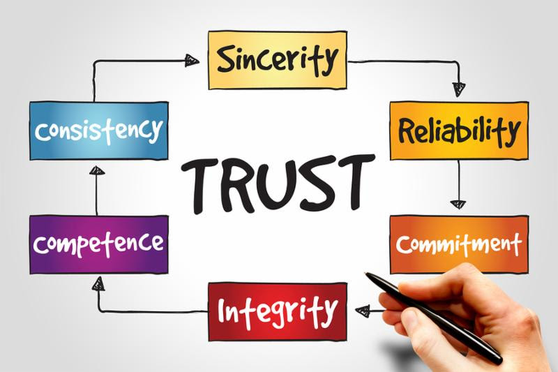

Strolling down memory lane, I came across my very first Insights piece written in the Spring of 2002, “Truth in Communications: A Point of Differentiation." It was inspired by the rash of corporate scandals that made headline news, including Enron, Worldcom, Adelphia and Arthur Andersen to name just a few of the culprits and casualties.
All these years later, the focus on “truth” has once again reared its head. And as before, the implications and opportunities are far-reaching.
Truth in Public Relations and the Media: The concepts of "fake news" and “alternative facts” have put a spotlight on the absolute nature of truth-telling in the news media and public relations industry. According to a recent survey by the USC Annenberg School for Communication and Journalism [1], 80% of the participating 900 public relations practitioners – from across the political divide – indicate that the White House communications team "distorts the truth." This perspective has helped fuel negative perceptions about the PR industry and has stirred a number of professionals to call for higher standards to ensure its integrity.
In the news media, there's no need to look any further than at the Wall Street Journal's marketing efforts to see how important truth has become. The WSJ twitter feed reads "Real News. Real Journalism" and their sponsored ads on Facebook say, "Truth has always been essential. It’s at the heart of everything we do, which is what makes the Wall Street Journal America’s most trusted newspaper." It's interesting how truth-telling is being treated as a value proposition to market the WSJ.
Truth in Business: The emphasis on truth and how it engenders trust has become increasingly important in the business environment. While the 2017 Edelman Trust Barometer indicates that the general population's trust in business is eroding [2] research from Globescan further reveals that today’s consumer is increasingly looking for truth and transparency from the companies from which they buy their products and services. [3]
The good news is that there’s plenty of room in the halls of marketing to provide just that. Truth-telling starts by communicating in a straight-forward, facts-based manner in all marketing and business outreach. It's about using content marketing to showcase expertise and points-of-view on emerging business themes and major trends in an unvarnished way. And it's about building corporate responsibility programs that are committed to ethical, social, economic and environmental activities while providing demonstrable results.
In a recent interview posted on Glassdoor, Cathy Engelbart, CEO of Deloitte addresses this dynamic perfectly:
"On trust, it’s really about authenticity and transparency. We live in a world where people can sense insincerity or corporate-speak from a mile away. Companies and leaders have to be authentic in tone, voice, and action. It’s not just about 'saying the right thing' but talking about what matters most to your company and your people, and backing that up with action."[4]
So, here's an abbreviated version of that very first piece – eliminating outdated details courtesy of financial regulatory reform. Regardless, it is surprising how relevant this Insight is today and how the importance of truth has not changed but only strengthened over time. All these years later, it's a salute to truth as an enduring point of differentiation and means to enhance business value.
Spring 2002
Truth In Communications: A Point of Differentiation
Most of us were raised on the philosophy that “honesty is the best policy” but the number of corporate malfeasance cases has exposed a dirty truth – that honesty is not necessarily one of our business virtues.
While truth and integrity in business have been recently under an intense focus, communications specialists have wrestled with the issue of “truth” for years.
In advertising, where companies tell their stories in as provocative a way as possible, a naturally skeptical buying public tends to view advertising under a lens of suspicion. Is the company telling the truth? Should the buyer believe the message? This was supported by research commissioned by the Advertising Standards Authority, a UK organization that works to ensure advertisements are legal, decent, honest and truthful. The research revealed that consumers believe that advertisers are too economical with the truth and are concerned by “untruthful truths.”
Crisis management counselors also deal with the issue of truth. These specialists typically advise companies to "not take a bunker approach” and “provide the facts” during a crisis. This is a winning strategy and there are countless examples that prove its effectiveness. But it is unnerving to consider that many companies do not willingly communicate certain truths until they are forced.
Truth in financial communications is the area under closest scrutiny. Financial firms and independent advisors are now under the powerful microscope of law enforcement officials and regulatory bodies as C-Suite finagling of balance sheets has resulted in bankruptcies and significant investor losses. While new guidelines might not have prevented the downfall of Enron, the painful lesson learned is that companies must tell the whole truth or the consequences could be dire – both legally and financially.
Overall, it seems that truth is often obfuscated by a careful and deliberate approach – “I won’t lie about what I tell you, I’ll just not give you all the facts” – until a crisis emerges or someone asks the right probing questions. It seems that the spin cycle has been used to a point where truth has been virtually washed out.
In the March issue of Business 2.0, the cover story on Kenneth Lay asks the question “After Enron, telling the truth is trendy again. Does anyone remember how?" Yes, we do. But it is a conscious choice that companies need to make. As strategic communications practitioners, we counsel top management to articulate their vision and we measure their success by business or stock performance. Perhaps, it is time to go one step further – to consider no-holds-barred truth as a point of differentiation in a complex and saturated marketing and financial world.
By adapting a spirit of honesty and candor, a company answers the clarion call to incorporate truth as part of their business communications. This is the type of refreshing change that could enhance reputation and build value.
This means we as communicators, advertisers, marketers, IR specialists as well as CFOs and CEOs, need to do two things. First, it means taking a lesson from the current environment and recognizing that telling the truth is now mandatory. Second, it means taking a leap of faith and realizing that truth might just sell. Truth only leads to trust, and trust builds value. And in the end, isn’t building value the real goal of all of our efforts anyway?
[1] USC Annenberg School of Communication and Journalism survey: White House Communications impact on perception of the public relations profession. June 20, 2017.
[2] 2017 Edelman Trust Barometer
[3] Globescan Research: The 2017 Sustainability Leaders: Year 20 and Trust and Transparency in the Supply Chain
[4] Jackson, Amy Elisa. The Brilliant Career Advice from Deloitte’s CEO in One Sentence. Glassdoor. June 23, 2017.